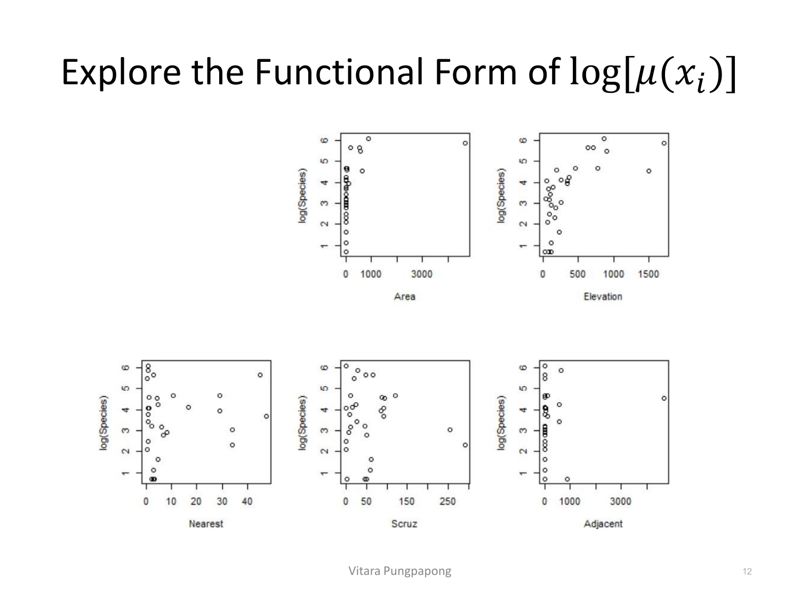
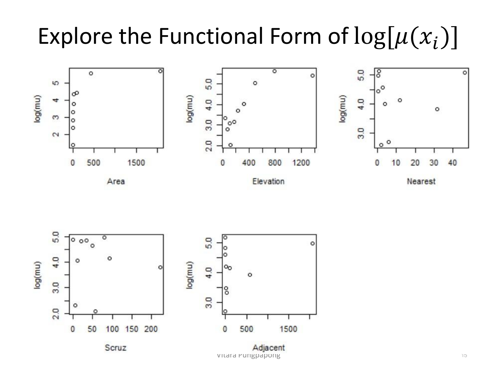
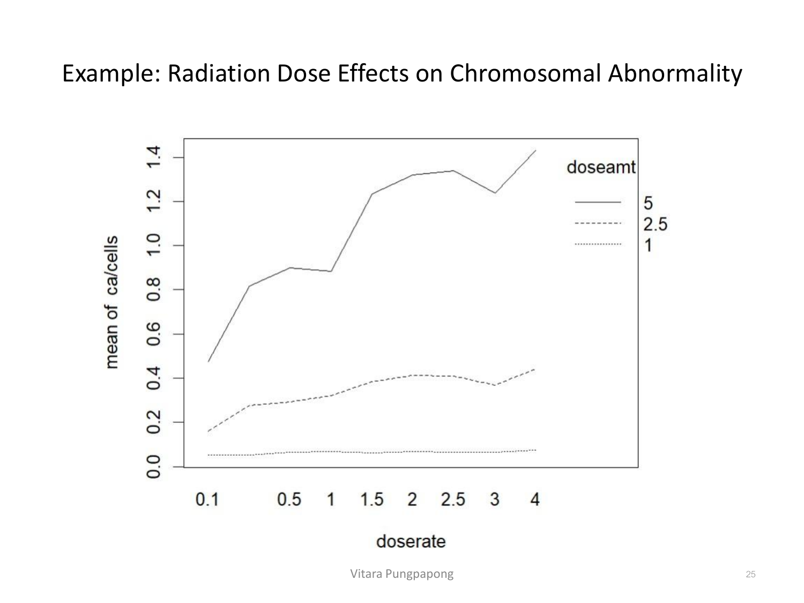

Lecture 11 — Count Regression
บทเรียนนี้ต่อยอดจากกรอบ GLM ใน Lecture 8: ตัวแปรตอบสนอง (response) เปลี่ยนจาก binary/proportion (Lecture 9–10) มาเป็นค่านับ (count) — จำนวนเหตุการณ์ที่เกิดขึ้น เช่น จำนวนชนิดพืชบนเกาะ, จำนวนความผิดปกติของโครโมโซม, จำนวนสายเรียกเข้า. โครงสร้าง 4 ทักษะเดิมยังใช้ได้: เขียนสมการโมเดล (random component เป็น Poisson หรือ Negative Binomial, link function เป็น log), เช็ค assumption (ตอนนี้เพิ่มเรื่อง overdispersion ที่ไม่เคยเจอใน SLR/MLR), แปลผลสัมประสิทธิ์เป็น rate ratio (ญาติของ odds ratio ใน Lecture 9 แต่ตีความคนละแบบ — ห้ามสับสน), และอ่าน R output จาก glm(family=poisson) และ glm.nb().
ข้อมูลนับพบได้ทั่วไป: จำนวนผู้ป่วยมะเร็งต่อพื้นที่, จำนวนสายเรียกเข้าศูนย์บริการต่อวัน, จำนวนอนุภาครังสีที่ Geiger counter นับได้ต่อวินาที, จำนวนอุบัติเหตุจราจรต่อสุดสัปดาห์ — โมเดลตามธรรมชาติของข้อมูลแบบนี้คือสมมติว่าเกิดจาก Poisson process:
สังเกตจุดสำคัญที่สุดของ Poisson: mean กับ variance เท่ากันเป๊ะ (ทั้งคู่เท่ากับ \(\lambda\)) — นี่ไม่ใช่แค่คุณสมบัติทางคณิตศาสตร์เฉย ๆ แต่เป็นassumptionที่โมเดล Poisson ตั้งไว้กับข้อมูลจริง ถ้าข้อมูลจริงมี variance มากกว่า mean (เรียกว่า overdispersion) โมเดล Poisson จะเชื่อ SE ผิด — เป็นประเด็นที่บทเรียนนี้จะกลับมาย้ำหลายรอบ.
ให้ \(\mu = E[y] = \lambda\) — Poisson(\(\mu\)) เป็นสมาชิกของ exponential family เขียนได้เป็น \(P(y) = \exp\{y \log \mu - \mu - \log(y)\}\) ซึ่งจัดรูปตามกรอบ Lecture 8 ได้:
เพราะ canonical link ของ Poisson คือ \(\theta = \log(\mu)\) พอดี การใช้ canonical link (\(\theta_i = x_i\beta\)) จึงให้ log-linear model โดยตรง:
นี่คือสมการที่ต้องเขียนให้ได้ทันทีเมื่อโจทย์บอกว่า response เป็นค่านับ: random component คือ \(y \sim \text{Poisson}(\mu_i)\), link function คือ log, linear predictor คือ \(\beta_0+\beta_1 x_{i1}+\cdots+\beta_p x_{ip}\) — สามพจน์นี้ครบเมื่อไรคือเขียนสมการ Poisson regression ถูกแล้ว.
สไลด์ใช้ข้อมูล gala จาก package faraway: จำนวนชนิดพืช (Species) และตัวแปรภูมิศาสตร์ 5 ตัวของเกาะกาลาปาโกส 30 เกาะ เป้าหมายคือเช็คว่าจำนวนชนิดพืชสัมพันธ์กับตัวแปรภูมิศาสตร์เหล่านี้หรือไม่: Area (พื้นที่เกาะ, km²), Elevation (ความสูงสุดของเกาะ, m), Nearest (ระยะห่างจากเกาะที่ใกล้ที่สุด, km), Scruz (ระยะห่างจากเกาะ Santa Cruz, km), Adjacent (พื้นที่เกาะข้างเคียง, km²):
เกาะที่ปรากฏชื่อในแผนที่นี้คือแถวจริงของข้อมูล gala — เช่น Isabela (เกาะใหญ่สุดในแผนที่ ทางซ้ายล่าง) มี Species=347, Area=4669.32 km², Elevation=1707 m ซึ่งเป็นค่ามากที่สุดในทุกตัวแปรของทั้งชุดข้อมูล ในขณะที่ Onslow (จุดเล็กที่ไม่ได้ติดชื่อในแผนที่แต่ปรากฏในตาราง) มี Species=2, Area=0.01 km² เท่านั้น — ความแตกต่างสุดขั้วของขนาดเกาะแบบนี้ (0.01 ถึง 4669.32 km²) เป็นเหตุผลที่ทำให้ค่าสัมประสิทธิ์ของ Area ที่จะเห็นต่อไปมีขนาดเล็กมากต่อหน่วย km² เดียว (ต้องคูณเป็นช่วงใหญ่ถึงจะเห็นผลชัด):
> library(faraway)
> data(gala)
> gala
Species Endemics Area Elevation Nearest Scruz Adjacent
Baltra 58 23 25.09 346 0.6 0.6 1.84
Bartolome 31 21 1.24 109 0.6 26.3 572.33
Caldwell 3 3 0.21 114 2.8 58.7 0.78
Champion 25 9 0.10 46 1.9 47.4 0.18
Coamano 2 1 0.05 77 1.9 1.9 903.82
Daphne.Major 18 11 0.34 119 8.0 8.0 1.84
Daphne.Minor 24 0 0.08 93 6.0 12.0 0.34
Darwin 10 7 2.33 168 34.1 290.2 2.85
Eden 8 4 0.03 71 0.4 0.4 17.95
Isabela 347 89 4669.32 1707 0.7 28.1 634.49
Onslow 2 2 0.01 25 3.3 45.9 0.10
...สังเกต Endemics (จำนวนชนิดเฉพาะถิ่น) ในตาราง — สไลด์ตัดตัวแปรนี้ออกจากโมเดล (Species~.-Endemics) เพราะ Endemics เป็นส่วนย่อยของ Species เอง (นับซ้อนกัน ไม่ใช่ตัวแปรอิสระที่อธิบาย Species) — ถ้าใส่ Endemics เข้าไปด้วยจะเป็นการ leak คำตอบเข้าไปในตัวทำนาย.
ฟิตโมเดล Poisson regression กับตัวแปรภูมิศาสตร์ทั้ง 5 ตัวแบบเชิงเส้น:
> model<-glm(Species~.-Endemics, data=gala, family=poisson)
> summary(model)
Call:
glm(formula = Species ~ . - Endemics, family = poisson, data = gala)
Deviance Residuals:
Min 1Q Median 3Q Max
-8.2752 -4.4966 -0.9443 1.9168 10.1849
Coefficients:
Estimate Std. Error z value Pr(>|z|)
(Intercept) 3.155e+00 5.175e-02 60.963 < 2e-16 ***
Area -5.799e-04 2.627e-05 -22.074 < 2e-16 ***
Elevation 3.541e-03 8.741e-05 40.507 < 2e-16 ***
Nearest 8.826e-03 1.821e-03 4.846 1.26e-06 ***
Scruz -5.709e-03 6.256e-04 -9.126 < 2e-16 ***
Adjacent -6.630e-04 2.933e-05 -22.608 < 2e-16 ***
---
Signif. codes: 0 '***' 0.001 '**' 0.01 '*' 0.05 '.' 0.1 ' ' 1
(Dispersion parameter for poisson family taken to be 1)
Null deviance: 3510.73 on 29 degrees of freedom
Residual deviance: 716.85 on 24 degrees of freedom
AIC: 889.68
Number of Fisher Scoring iterations: 5อ่านทีละส่วนเหมือน lm() แต่คอลัมน์ต่างออกไปนิดหน่อย: Estimate คือ β̂ บนสเกล log(μ) ไม่ใช่สเกลของ Y ตรง ๆ (ต้อง exponentiate ก่อนถึงจะตีความเป็นค่านับได้ — หัวข้อ 3), z value (ไม่ใช่ t value เหมือน lm() เพราะ Poisson ไม่มีพารามิเตอร์ variance แยกต่างหากให้ประมาณ — \(\phi=1\) ตายตัว), Dispersion parameter ... taken to be 1 คือสมมติฐานที่ตั้งไว้ (ยังไม่ใช่ค่าที่ตรวจสอบแล้ว — หัวข้อ 4 จะเช็คว่าสมมติฐานนี้เป็นจริงไหม), และ Null/Residual deviance ที่จะใช้ทำ goodness-of-fit test ต่อไป.
เพราะ link function เป็น log ไม่ใช่ identity เหมือน lm() การแปลผล β̂ ตรง ๆ จึงไม่มีความหมายเป็น "หน่วยของ Y ที่เปลี่ยนไป" — ต้อง exponentiate ก่อนเสมอ: \(\exp(\hat{\beta})\) คืออัตราส่วนอัตรา (rate ratio) ไม่ใช่ผลต่าง (difference)
Template ประโยค: "จากข้อมูลนี้ เมื่อ [ตัวแปร X] เพิ่มขึ้น 1 [หน่วยของ X] ค่าคาดหวังของจำนวนนับ (expected count/rate) ของ [Y] เปลี่ยนเป็น exp(β̂) เท่า ของเดิม (คูณด้วย exp(β̂)) โดยตัวแปรอื่นคงที่ (holding other variables constant)"
ข้อควรระวังที่ต่างจาก odds ratio (Lecture 9): rate ratio คือตัวคูณของค่านับที่คาดหวังโดยตรง (multiplicative effect บน μ) ไม่ใช่ตัวคูณของ odds — อย่าเผลอพูดว่า "odds ของการนับเพิ่มขึ้น" เพราะ Poisson ไม่มีแนวคิด odds เลย มีแต่ expected count/rate
ลองใช้จริงกับสัมประสิทธิ์ของ Elevation = 3.541e-03: \(\exp(0.003541) \approx 1.00355\) — แปลว่า เมื่อ Elevation เพิ่มขึ้น 1 เมตร จำนวนชนิดพืชที่คาดหวังจะเพิ่มขึ้นเป็น 1.00355 เท่าของเดิม (เพิ่มขึ้นประมาณ 0.355%) โดยตัวแปรภูมิศาสตร์อื่นคงที่ — ค่านัยสำคัญทางสถิติชัดเจน (p < 2e-16) แม้ตัวคูณต่อ 1 เมตรจะดูเล็ก เพราะ Elevation ในข้อมูลมีช่วงกว้างถึง 1707 เมตร (Isabela) การเปลี่ยน 1 เมตรจึงเป็นสัดส่วนน้อยมากของช่วงทั้งหมด.
ตัวอย่างที่ต้องระวังเรื่องสเกล: Area = -5.799e-04 ให้ \(\exp(-0.0005799) \approx 0.99942\) ต่อ 1 km² — ตัวเลขนี้ใกล้ 1 มากจนดูเหมือน "ไม่มีผล" แต่ถ้าคิดเป็นช่วง 100 km² (สเกลที่ Area ในข้อมูลจริงแปรผัน เช่น Espanola=58.27 ถึง Isabela=4669.32): \(\exp(-0.0005799\times100) = \exp(-0.05799) \approx 0.9437\) — พื้นที่เกาะเพิ่มขึ้นทุก 100 km² สัมพันธ์กับจำนวนชนิดพืชที่คาดหวังลดลงเหลือ 94.37% ของเดิม (ลดลง ~5.6%) กฎที่ต้องจำ: ถ้า β̂ มีขนาดเล็กมาก ให้ลองคูณด้วยขนาดช่วงที่สมเหตุสมผลของ X ก่อนสรุปว่าตัวแปรนั้น "ไม่มีผล" — สัมประสิทธิ์เล็กไม่ได้แปลว่าผลกระทบทางปฏิบัติเล็กเสมอไป ถ้าหน่วยของ X มีสเกลใหญ่.
สังเกตอีกจุดที่น่าสนใจ: Nearest = 8.826e-03 เป็นบวก (p=1.26e-06) — \(\exp(0.008826) \approx 1.00887\) แปลว่ายิ่งเกาะอยู่ไกลจากเกาะที่ใกล้ที่สุด จำนวนชนิดพืชที่คาดหวังกลับเพิ่มขึ้น เล็กน้อยต่อ 1 กม. — ทิศทางนี้ขัดสามัญสำนึกเบื้องต้น (island biogeography theory คาดว่ายิ่งใกล้แหล่งพันธุ์ยิ่งมีชนิดพืชมาก) แต่เป็นสิ่งที่โมเดลนี้บอกเมื่อควบคุมตัวแปรอื่นแล้ว — ข้อสอบมักถามแบบนี้เพื่อเช็คว่าอ่านทิศทางเครื่องหมาย (+/−) ถูกไหม ไม่ใช่แค่ท่องสูตร.
Scruz = -5.709e-03 ให้ครบองค์ประกอบ (ทิศทาง, exp(β̂), หน่วยของ X, "holding other variables constant")\(\exp(-5.709 \times 10^{-3}) \approx 0.99431\)
"จากข้อมูลนี้ เมื่อ Scruz (ระยะห่างจากเกาะ Santa Cruz) เพิ่มขึ้น 1 กิโลเมตร จำนวนชนิดพืชที่คาดหวัง (expected Species count) ของเกาะนั้นเปลี่ยนเป็น 0.99431 เท่าของเดิม หรือลดลงประมาณ 0.57% โดยตัวแปรภูมิศาสตร์อื่น (Area, Elevation, Nearest, Adjacent) คงที่ — อย่างมีนัยสำคัญทางสถิติ (p < 2e-16)"
เหมือนกับ Lecture 9–10 ใช้ deviance เทียบกับ χ² distribution เพื่อเช็คว่าโมเดลฟิตข้อมูลดีพอไหม:
> pchisq(deviance(model), model$df.residual, lower=FALSE)
[1] 7.073157e-136H₀ ของการทดสอบนี้คือ "โมเดลฟิตข้อมูลได้ดี (residual deviance ควรใกล้เคียงกับ df ถ้าโมเดลถูก)" — p-value ที่ได้คือ 7.073157×10⁻¹³⁶ น้อยกว่า 0.05 อย่างท่วมท้น จึงปฏิเสธ H₀: โมเดลนี้ fit ข้อมูลได้แย่มาก. ทำไมถึงแย่ขนาดนี้? ลองเทียบ residual deviance กับ df โดยตรง: \(716.85 / 24 \approx 29.9\) — ถ้าโมเดล Poisson ถูกต้องจริง อัตราส่วนนี้ควรใกล้เคียง 1 (เพราะ deviance ~ χ²(df) โดยประมาณ ซึ่งมี mean = df) แต่ที่นี่ได้ 29.9 ซึ่งมากกว่า 1 เกือบ 30 เท่า — สัญญาณชัดเจนของ overdispersion: variance ของข้อมูลจริงมากกว่าที่ Poisson (ที่ตั้ง variance=mean) คาดไว้มาก สไลด์สรุปเหตุผลตรงไปตรงมา: "This might due to the strong assumption of Poisson distribution which assumes that the mean equals variance".
เช็ค residual deviance / df (หรือ Pearson χ²/df) — ถ้าอัตราส่วนนี้ใกล้ 1 แปลว่า assumption mean=variance ของ Poisson สมเหตุสมผล; ถ้ามากกว่า 1 อย่างชัดเจน (โดยเฉพาะ >>1.5–2) แปลว่ามี overdispersion ต้องแก้ด้วย quasi-Poisson หรือ Negative Binomial (หัวข้อ 6–8) ไม่ใช่เชื่อ SE จาก Poisson ตรง ๆ
pchisq(deviance, df, lower=FALSE) ควรสรุปอย่างไร?ก่อนจะรีบสรุปว่าโมเดลผิดเพราะ overdispersion ล้วน ๆ สไลด์ให้ลองเช็คก่อนว่า relationship ระหว่างแต่ละ X กับ log(μ) เป็นเชิงเส้นจริงไหม (เหมือนหลักการ "plot ก่อนเสมอ" จาก SLR) ด้วยการ plot X กับ log(Species) ตรง ๆ:

กราฟ Area (บนซ้าย) แสดงจุดส่วนใหญ่กระจุกตัวอยู่ใกล้ Area=0 (เพราะเกาะส่วนใหญ่เล็ก มีแค่ Isabela/Fernandina ที่ใหญ่จนหลุดไปทางขวาสุด) ทำให้มองแนวโน้มยากมาก — นี่คือปัญหาของการ plot ข้อมูลดิบตรง ๆ เมื่อ X มีการกระจายแบบเบ้ขวารุนแรง (right-skewed) สไลด์จึงเสนอวิธีที่สองคือรวมกลุ่มข้อมูล (collapse) ที่มีค่า X ใกล้เคียงกันเข้าด้วยกันก่อน แล้วค่อยดูค่าเฉลี่ยของ log(μ) ต่อกลุ่ม ด้วยฟังก์ชันที่เขียนเอง:
> logplot<-function(x,y,ncat=10,...)
+ {
+ brksx<-unique(quantile(x,probs=0:ncat/ncat))
+ nbrksx<-length(brksx)
+ cutx<-cut(x,breaks=brksx,include.lowest=TRUE)
+ mx<-tapply(x,cutx,FUN=mean)
+ logmu<-log(tapply(y,cutx,FUN=mean))
+ plot(mx,logmu,...)
+ }
> logplot(gala$Area,gala$Species,ncat=10,xlab="Area",ylab="log(mu)")
> logplot(gala$Elevation,gala$Species,ncat=10,xlab="Elevation",ylab="log(mu)")
> logplot(gala$Nearest,gala$Species,ncat=10,xlab="Nearest",ylab="log(mu)")
> logplot(gala$Scruz,gala$Species,ncat=10,xlab="Scruz",ylab="log(mu)")
> logplot(gala$Adjacent,gala$Species,ncat=10,xlab="Adjacent",ylab="log(mu)")ฟังก์ชันนี้ตัด X ออกเป็น ncat=10 กลุ่มตามควอนไทล์ (quantile) แล้วคำนวณค่าเฉลี่ยของ x และ log(ค่าเฉลี่ยของ y) ในแต่ละกลุ่ม — ผลคือกราฟที่มีจุดน้อยลง (10 จุดแทนที่จะเป็น 30) แต่เห็นแนวโน้มชัดขึ้นมาก:

อ่านกราฟ Elevation (บนกลาง): log(mu) ไต่จากประมาณ 2.0 ที่ Elevation≈0 ขึ้นไปถึงเกือบ 5.7 ที่ Elevation≈800 แล้วแบนราบช่วง 800–1300 — ไม่ใช่เส้นตรงตลอดช่วง แต่โค้งแบบอิ่มตัว (saturating) ที่ค่า Elevation สูง ๆ ส่วนกราฟ Area (บนซ้าย) ยิ่งชัดกว่า: log(mu) พุ่งขึ้นเร็วมากช่วง Area น้อย ๆ แล้วเกือบราบเรียบหลังจากนั้น — รูปแบบโค้งแบบนี้คือเหตุผลที่สไลด์เสนอให้เพิ่มพจน์กำลังสอง (quadratic term) ของแต่ละตัวแปรเข้าไปในโมเดล แทนที่จะใช้แค่พจน์เชิงเส้นอย่างเดียว.
> model<-glm(Species~Area+Elevation+Nearest+Scruz+Adjacent+I(Area^2)
+ +I(Elevation^2)+I(Nearest^2)+I(Scruz^2)+I(Adjacent^2), data=gala,
+ family=poisson)
> summary(model)
...
Coefficients:
Estimate Std. Error z value Pr(>|z|)
(Intercept) 2.174e+00 1.001e-01 21.718 < 2e-16 ***
Area 1.439e-03 1.948e-04 7.388 1.49e-13 ***
Elevation 8.925e-03 4.549e-04 19.620 < 2e-16 ***
Nearest -6.196e-02 9.019e-03 -6.870 6.44e-12 ***
Scruz 9.106e-03 1.494e-03 6.094 1.10e-09 ***
Adjacent -4.876e-04 1.988e-04 -2.453 0.0142 *
I(Area^2) 8.944e-08 3.976e-08 2.250 0.0245 *
I(Elevation^2) -6.934e-06 4.785e-07 -14.491 < 2e-16 ***
I(Nearest^2) 1.090e-03 1.970e-04 5.531 3.18e-08 ***
I(Scruz^2) -3.514e-05 5.590e-06 -6.286 3.26e-10 ***
I(Adjacent^2) 2.534e-07 4.820e-08 5.258 1.45e-07 ***
---
(Dispersion parameter for poisson family taken to be 1)
Null deviance: 3510.73 on 29 degrees of freedom
Residual deviance: 354.63 on 19 degrees of freedom
AIC: 537.46ทุกพจน์ (รวมพจน์กำลังสอง) มีนัยสำคัญทางสถิติ และ AIC ลดลงจาก 889.68 เหลือ 537.46 — โมเดลดีขึ้นชัดเจน แต่ residual deviance/df = 354.63/19 ≈ 18.7 ยังคงมากกว่า 1 อยู่มาก:
> pchisq(deviance(model), model$df.residual, lower=FALSE)
[1] 1.128763e-63
> sum(residuals(model, type="pearson")^2)/model$df.residual
[1] 16.80629ค่า 16.80629 นี้คือค่าประมาณของ dispersion parameter φ จาก Pearson residuals — เทียบกับที่ Poisson ตั้งไว้ว่า \(\phi=1\) ตายตัว ข้อมูลจริงมี variance มากกว่าที่ Poisson คาดไว้ถึงประมาณ 16.8 เท่า นี่คือ overdispersion ที่ชัดเจนมาก แม้จะเพิ่มพจน์กำลังสองแก้ปัญหา functional form ไปแล้วก็ตาม — สรุปได้ว่าปัญหาไม่ได้อยู่ที่รูปแบบฟังก์ชัน (functional form) แต่อยู่ที่ตัว distribution assumption ของ Poisson เอง สไลด์จึงเสนอ quasipoisson เป็นทางแก้ต่อไป.
sum(residuals(model,type="pearson")^2)/df.residual = 16.8 ข้อสรุปใดถูกต้องที่สุด?Quasi-Poisson ยังใช้ point estimate (β̂) แบบเดียวกับ Poisson แต่ปรับ SE ให้ใหญ่ขึ้นตามค่า dispersion parameter ที่ประมาณได้จริง แทนที่จะตรึงไว้ที่ 1:
> model2<-glm(Species~Area+Elevation+Nearest+Scruz+Adjacent+I(Area^2)
+ +I(Elevation^2)+I(Nearest^2)+I(Scruz^2)+I(Adjacent^2), data=gala,
+ family=quasipoisson)
> summary(model2)
...
Coefficients:
Estimate Std. Error t value Pr(>|t|)
(Intercept) 2.174e+00 4.103e-01 5.298 4.11e-05 ***
Area 1.439e-03 7.985e-04 1.802 0.087418 .
Elevation 8.925e-03 1.865e-03 4.786 0.000128 ***
Nearest -6.196e-02 3.697e-02 -1.676 0.110176
Scruz 9.106e-03 6.125e-03 1.487 0.153532
Adjacent -4.876e-04 8.150e-04 -0.598 0.556674
I(Area^2) 8.944e-08 1.630e-07 0.549 0.589568
I(Elevation^2)-6.934e-06 1.962e-06 -3.535 0.002213 **
I(Nearest^2) 1.090e-03 8.076e-04 1.349 0.193141
I(Scruz^2) -3.514e-05 2.292e-05 -1.533 0.141694
I(Adjacent^2) 2.534e-07 1.976e-07 1.283 0.215033
---
(Dispersion parameter for quasipoisson family taken to be 16.80632)
Null deviance: 3510.73 on 29 degrees of freedom
Residual deviance: 354.63 on 19 degrees of freedom
AIC: NAเทียบ Area ระหว่างสองโมเดล: Poisson ให้ SE=1.948e-04 (p=1.49e-13, ***), quasipoisson ให้ SE=7.985e-04 (p=0.087, ไม่ถึง 0.05) — Estimate เท่ากันเป๊ะ (1.439e-03) แต่ SE ของ quasipoisson ใหญ่กว่าประมาณ 4.1 เท่า ตรวจสอบได้: \(\sqrt{16.80629} \approx 4.0995\) ตรงกับอัตราส่วน SE พอดี (0.0007985/0.0001948 ≈ 4.10) — นี่คือกลไกของ quasi-likelihood: SE(quasi) = SE(Poisson) × √dispersion ผลลัพธ์คือหลายตัวแปรที่ "significant" ภายใต้ Poisson (Area, Nearest, Scruz, I(Area²), I(Nearest²), I(Scruz²), I(Adjacent²)) กลับไม่ significantภายใต้ quasipoisson ที่คำนึงถึง overdispersion แล้ว — สะท้อนว่า Poisson ธรรมดาให้ความมั่นใจสูงเกินจริงกับสัมประสิทธิ์เมื่อมี overdispersion.
เมื่อเปรียบเทียบโมเดล Poisson ที่มี overdispersion ควรใช้ F-test แทน χ² test เพราะต้องประมาณ dispersion parameter เพิ่ม (เสีย 1 df ให้กับมัน) — drop1(model2, test="F") ทดสอบตัดแต่ละตัวแปรออกทีละตัว:
> drop1(model2, test="F")
Single term deletions
Df Deviance F value Pr(>F)
354.63
Area 1 408.67 2.8957 0.1051214
Elevation 1 744.12 20.8681 0.0002101 ***
Nearest 1 404.21 2.6567 0.1195831
Scruz 1 391.83 1.9930 0.1741906
Adjacent 1 360.99 0.3407 0.5663154
I(Area^2) 1 359.62 0.2678 0.6108082
I(Elevation^2) 1 574.16 11.7622 0.0028098 **
I(Nearest^2) 1 386.30 1.6968 0.2082768
I(Scruz^2) 1 397.18 2.2801 0.1474941
I(Adjacent^2) 1 384.29 1.5894 0.2226675 หลัง controlled สำหรับ overdispersion แล้ว มีแค่ Elevation และ I(Elevation^2) เท่านั้นที่ยัง significant ชัดเจน (p<0.01) ส่วนตัวแปรอื่นแทบทั้งหมดไม่ significant — บทเรียนสำคัญ: เมื่อมี overdispersion การอ่านผลจาก Poisson ธรรมดาตรง ๆ (ไม่ปรับ dispersion) จะได้ข้อสรุปที่ significant เกินจริงเกือบทุกตัวแปร.
บางครั้งสิ่งที่น่าสนใจไม่ใช่ "จำนวนนับดิบ" แต่คืออัตรา (rate) ต่อหน่วยเวลา/พื้นที่/ขนาดกลุ่ม — เพราะจำนวนนับดิบเพิ่มขึ้นตามธรรมชาติเมื่อ "ฐาน" ที่นับด้วยใหญ่ขึ้น (เมืองใหญ่มีคดีฆาตกรรมมากกว่าเมืองเล็กเป็นธรรมดา ไม่ใช่เพราะเมืองใหญ่อันตรายกว่าเสมอไป) สไลด์ยกตัวอย่างอัตราฆาตกรรมต่อประชากร (#homicides/population size) และอัตราการโจรกรรมต่อจำนวนครัวเรือน ให้ \(\mu\) เป็นจำนวนฆาตกรรมเฉลี่ยและ N เป็นขนาดประชากร โมเดลอัตราเขียนเป็น:
จุดสำคัญที่สุดของสมการนี้: พจน์ log N ที่เติมเข้ามาไม่มีสัมประสิทธิ์ (ไม่ใช่ \(\beta \cdot \log N\) แต่เป็น \(1 \cdot \log N\) ตายตัว) — พจน์แบบนี้เรียกว่า offset: เป็นตัวแปรที่ใส่เข้าไปในสมการเพื่อ "หักลบ" ผลของขนาดฐานออกไปก่อน โดยไม่ให้ข้อมูลมาประมาณสัมประสิทธิ์ของมันเอง (บังคับสัมประสิทธิ์ = 1 เสมอ) ผลคือโมเดลกำลังทำนายอัตรา (\(\mu/N\)) จาก x จริง ๆ แม้จะยังฟิตด้วย glm(family=poisson) กับ y ที่เป็นจำนวนนับดิบก็ตาม
Purott & Reeder (1976) ทำการทดลองวัดผลของรังสีแกมมาต่อจำนวนความผิดปกติของโครโมโซม (chromosomal abnormality) ข้อมูล dicentric มี 27 แถว 4 ตัวแปร: cells (จำนวนเซลล์ที่นับ หน่วยร้อย), ca (จำนวนความผิดปกติที่พบ), doseamt (ปริมาณรังสี หน่วย Grays), doserate (อัตราการให้รังสี Grays/ชั่วโมง) — สไลด์ระบุชัดว่าสนใจอัตรา ca/cells มากกว่าจำนวนดิบ เพราะคาดว่าจำนวนความผิดปกติแปรผันตรงกับจำนวนเซลล์ที่นับ (นับเซลล์เยอะก็ย่อมเจอความผิดปกติเยอะตามสัดส่วน ไม่ใช่เพราะรังสีแรงขึ้น):
> library(faraway)
> data(dicentric)
> dicentric
cells ca doseamt doserate
1 478 25 1.0 0.10
2 1907 102 1.0 0.25
3 2258 149 1.0 0.50
4 2329 160 1.0 1.00
5 1238 75 1.0 1.50
...
> xtabs(ca/cells~doseamt+doserate,dicentric)
doserate
doseamt 0.1 0.25 0.5 1 1.5 2 2.5 3 4
1 0.05 0.05 0.07 0.07 0.06 0.07 0.07 0.07 0.07
2.5 0.16 0.28 0.29 0.32 0.38 0.41 0.41 0.37 0.44
5 0.48 0.82 0.90 0.88 1.23 1.32 1.34 1.24 1.43อ่านตาราง xtabs: ที่ doseamt=1 อัตรา ca/cells แทบไม่ขยับเลยตลอดทุกค่า doserate (0.05–0.07) แต่ที่ doseamt=5 อัตราไต่จาก 0.48 ขึ้นไปถึง 1.43 เมื่อ doserate เพิ่มจาก 0.1 เป็น 4 — ชัดเจนว่าอัตราความผิดปกติเพิ่มขึ้นตามทั้ง doseamt และ doserate และผลของ doserate ดูจะ "แรงกว่า" เมื่อ doseamt สูง (สัญญาณของ interaction) ดูภาพประกอบ interaction plot ยืนยันแนวโน้มนี้:

เส้น doseamt=1 (เส้นล่างสุด) เกือบราบตลอดช่วง doserate ขณะที่เส้น doseamt=5 (เส้นบนสุด) ชันขึ้นชัดเจนจาก 0.48 ไปจนเกือบ 1.43 — เส้นทั้งสามไม่ขนานกัน (เส้นบนชันกว่าเส้นล่างมาก) นี่คือนิยามของ interaction ในทางกราฟ: ผลของ doserate ต่ออัตราขึ้นอยู่กับระดับของ doseamt ไม่ใช่คงที่ ดังนั้นสไลด์จึงลองใส่ interaction term doserate:doseamt เป็น factor เข้าไปในโมเดลก่อน:
> intglm<-glm(ca~log(cells)+as.factor(doserate)*as.factor(doseamt),
+ family=poisson,data=dicentric)
> summary(intglm)
Coefficients: (1 not defined because of singularities)
...
Null deviance: 9.1613e+02 on 26 degrees of freedom
Residual deviance: 4.1966e-14 on 0 degrees of freedom
AIC: 229.41โมเดลนี้มีปัญหาชัดเจน: (1 not defined because of singularities) และ residual deviance เหลือ df=0 — เพราะใส่ as.factor() ทั้งสองตัวคูณกันเป็น interaction เต็มรูปแบบ (saturated model) จำนวนพารามิเตอร์เท่ากับจำนวนกลุ่มข้อมูลพอดี โมเดลจึง "ฟิตเป๊ะ" ทุกจุดแต่ไม่เหลือข้อมูลให้ทดสอบอะไรได้เลย (overfitting แบบสุดขั้ว) — ต้องลดจำนวนพารามิเตอร์ลง สไลด์จึงเปลี่ยนมาใช้ log(doserate) แบบต่อเนื่องแทน as.factor(doserate):
> dctglm<-glm(ca~log(cells)+log(doserate)*dosef,family=poisson,data=dicentric)
> summary(dctglm)
Coefficients:
Estimate Std. Error z value Pr(>|z|)
(Intercept) -2.76534 0.38116 -7.255 4.02e-13 ***
log(cells) 1.00252 0.05137 19.517 < 2e-16 ***
log(doserate) 0.07200 0.03547 2.030 0.042403 *
dosef2.5 1.62984 0.10273 15.866 < 2e-16 ***
dosef5 2.76673 0.12287 22.517 < 2e-16 ***
log(doserate):dosef2.5 0.16111 0.04837 3.331 0.000866 ***
log(doserate):dosef5 0.19316 0.04299 4.493 7.03e-06 ***
---
(Dispersion parameter for poisson family taken to be 1)
Null deviance: 916.127 on 26 degrees of freedom
Residual deviance: 21.748 on 20 degrees of freedom
AIC: 211.15สังเกตค่าสัมประสิทธิ์ log(cells) = 1.00252 — ใกล้เคียง 1 มาก พอดีตามที่ทฤษฎีคาดไว้ (เพราะจำนวนความผิดปกติควรแปรผันตรงกับจำนวนเซลล์แบบ 1 ต่อ 1 — นับเซลล์เพิ่มเป็น 2 เท่า ก็ควรเจอความผิดปกติเพิ่มเป็น 2 เท่าโดยธรรมชาติ ไม่ใช่ผลของรังสี) สไลด์ชี้ตรง ๆ ว่า "the coefficient of log(cells) should be one" — แทนที่จะปล่อยให้ข้อมูลประมาณค่านี้ (ซึ่งมีความไม่แน่นอนของตัวมันเอง) เราควรบังคับให้เท่ากับ 1 เลย ด้วย offset():
> dctglm2<-glm(ca~offset(log(cells))+log(doserate)*dosef,family=poisson,
+ data=dicentric)
> summary(dctglm2)
Coefficients:
Estimate Std. Error z value Pr(>|z|)
(Intercept) -2.74671 0.03426 -80.165 < 2e-16 ***
log(doserate) 0.07178 0.03518 2.041 0.041299 *
dosef2.5 1.62542 0.04946 32.863 < 2e-16 ***
dosef5 2.76109 0.04349 63.491 < 2e-16 ***
log(doserate):dosef2.5 0.16122 0.04830 3.338 0.000844 ***
log(doserate):dosef5 0.19350 0.04243 4.561 5.1e-06 ***
---
(Dispersion parameter for poisson family taken to be 1)
Null deviance: 4753.00 on 26 degrees of freedom
Residual deviance: 21.75 on 21 degrees of freedom
AIC: 209.16เทียบสองโมเดล: log(doserate), dosef2.5, dosef5 และพจน์ interaction ได้ค่าประมาณ (estimate) ใกล้เคียงเดิมแทบทุกตัว แต่ SE เล็กลงมาก ทุกตัว (เช่น dosef2.5: SE จาก 0.10273 เหลือ 0.04946 — เล็กลงกว่าครึ่ง) และ AIC ดีขึ้นเล็กน้อย (211.15 → 209.16) — เพราะโมเดล offset ไม่ต้อง "เสีย 1 df" ไปกับการประมาณสัมประสิทธิ์ของ log(cells) อีกต่อไป (รู้ค่าแน่นอนแล้วว่า=1) ความไม่แน่นอนที่เหลือทั้งหมดจึงไปตกอยู่กับพารามิเตอร์ที่เหลือได้แม่นยำขึ้น — กฎการใช้ offset: ถ้ามีเหตุผลทางทฤษฎีที่บอกว่าสัมประสิทธิ์ของตัวแปรหนึ่งต้องเท่ากับ 1 พอดี (เช่น "ฐาน" ของอัตรา) ให้ใช้ offset() แทนการปล่อยให้โมเดลประมาณเอง
glm(ca~offset(log(cells))+...) ถึงเหมาะกับข้อมูล dicentric มากกว่าการใส่ log(cells) เป็นตัวแปรธรรมดาที่ให้โมเดลประมาณสัมประสิทธิ์เองQuasi-Poisson (หัวข้อ 6) แก้ปัญหา overdispersion โดยไม่เปลี่ยนสมมติฐานการแจกแจง แค่ปรับ SE ทีหลัง — Negative Binomial (NB) เป็นทางแก้อีกแบบที่เปลี่ยนตัวแบบการแจกแจงของ y ไปเลย โดยมองว่า NB คือ "gamma mixture ของ Poisson": สมมติว่าแต่ละหน่วยสังเกต i มี unobserved heterogeneity term \(\tau_i\) ที่ทำให้ \((y_i|x_i,\tau_i) \sim \text{Poisson}(\mu_i \tau_i)\) — ค่าเฉลี่ยแท้จริงของแต่ละหน่วยไม่เท่ากันเป๊ะแม้จะมี \(x_i\) เหมือนกัน (มีปัจจัยแฝงที่วัดไม่ได้เข้ามาแทรก) เมื่อกำหนดให้ \(\tau_i \sim \text{Gamma}(\theta,\theta)\) (mean=1, variance=1/θ) แล้วอินทิเกรต \(\tau_i\) ออกไป จะได้การแจกแจงของ \(y_i\) ที่ไม่มีเงื่อนไขบน \(\tau_i\) อีกต่อไป ซึ่งก็คือ Negative Binomial distribution พอดี:
สังเกตสูตร variance: \(\mu_i(1+\mu_i/\theta)\) จะมากกว่า \(\mu_i\) เสมอ (เพราะพจน์ \(\mu_i/\theta\) เป็นบวกเสมอเมื่อ θ>0) — นี่คือกลไกที่ NB "รองรับ overdispersion ได้โดยธรรมชาติ" ในตัวมันเอง ต่างจาก Poisson ที่ตรึง variance=mean ตายตัว และเมื่อ \(\theta\to\infty\) พจน์ \(\mu_i/\theta\to0\) ทำให้ variance ลู่เข้าหา \(\mu_i\) พอดี — Poisson คือกรณีพิเศษของ Negative Binomial เมื่อ θ มีค่าอนันต์ (ไม่มี unobserved heterogeneity เหลืออยู่เลย)
Canonical link ของ NB คือ log link เหมือน Poisson — สมการโมเดลจึงเขียนเหมือนกันทุกประการ: \(\log \mu = \beta_0+\beta_1 x_{i1}+\cdots+\beta_p x_{ip}\) แต่ R ไม่ใช้ glm() ธรรมดา เพราะต้องประมาณพารามิเตอร์เพิ่มอีกตัว (θ) — ต้องใช้ glm.nb() จาก package MASS แทน:
> library(MASS)
> nbmodel<-glm.nb(Species~.-Endemics, data=gala)
> summary(nbmodel)
Call:
glm.nb(formula = Species ~ . - Endemics, data = gala, init.theta = 1.674602286,
link = log)
Coefficients:
Estimate Std. Error z value Pr(>|z|)
(Intercept) 2.9065247 0.2510344 11.578 < 2e-16 ***
Area -0.0006336 0.0002865 -2.211 0.027009 *
Elevation 0.0038551 0.0006916 5.574 2.49e-08 ***
Nearest 0.0028264 0.0136618 0.207 0.836100
Scruz -0.0018976 0.0028096 -0.675 0.499426
Adjacent -0.0007605 0.0002278 -3.338 0.000842 ***
---
(Dispersion parameter for Negative Binomial(1.6746) family taken to be 1)
Null deviance: 88.431 on 29 degrees of freedom
Residual deviance: 33.196 on 24 degrees of freedom
AIC: 304.22อ่านผลต่างจาก Poisson model เดิม (หัวข้อ 2, ตัวแปรชุดเดียวกันแบบเชิงเส้น): θ̂ ที่ประมาณได้คือ 1.6746 (ตัวเลขนี้ปรากฏในบรรทัด init.theta และ Dispersion parameter for Negative Binomial(1.6746)) — ค่า θ ยิ่งเล็กยิ่งมี overdispersion มาก (ยิ่งไกลจาก ∞) เทียบ AIC: Poisson model ธรรมดาได้ 889.68 ในขณะที่ NB model ได้เพียง 304.22 — ต่างกันมหาศาล ยืนยันว่า NB ฟิตข้อมูลนี้ดีกว่า Poisson มาก และที่สำคัญ: สังเกตว่า Nearest และ Scruz ที่เคย significant มาก (p<2e-16) ใน Poisson ธรรมดา กลับไม่ significant เลย (p=0.836, p=0.499) ภายใต้ NB — สอดคล้องกับที่เห็นใน quasi-Poisson (หัวข้อ 6): เมื่อคำนึงถึง overdispersion อย่างถูกต้อง หลายตัวแปรที่ดูมีนัยสำคัญกลับไม่มีจริง
Rate ratio interpretation ของ NB ใช้template เดียวกันเป๊ะกับ Poisson (หัวข้อ 2.1) เพราะ link function เป็น log เหมือนกัน: Elevation=0.0038551 ให้ \(\exp(0.0038551)\approx1.00386\) — "เมื่อ Elevation เพิ่มขึ้น 1 เมตร จำนวนชนิดพืชที่คาดหวังเพิ่มเป็น 1.00386 เท่าของเดิม โดยตัวแปรอื่นคงที่ (อย่างมีนัยสำคัญ p=2.49e-08)" — สิ่งที่ต่างจาก Poisson ไม่ใช่วิธีตีความสัมประสิทธิ์ แต่คือ SE ที่สมจริงกว่าเพราะโมเดลรับรู้ overdispersion ตั้งแต่ต้น
Goodness-of-fit และการเลือกตัวแปรทำได้แบบเดียวกับ GLM อื่น ๆ:
> pchisq(nbmodel$deviance, nbmodel$df.residual, lower.tail=F)
[1] 0.100005
> drop1(nbmodel, test="Chisq")
Single term deletions
Df Deviance AIC LRT Pr(>Chi)
33.196 302.22
Area 1 36.665 303.69 3.468 0.062562 .
Elevation 1 65.866 332.89 32.670 1.092e-08 ***
Nearest 1 33.263 300.29 0.067 0.795920
Scruz 1 33.569 300.60 0.372 0.541732
Adjacent 1 41.151 308.18 7.955 0.004796 ** p-value ของ goodness-of-fit test คือ 0.100005 — มากกว่า 0.05 จึงไม่ปฏิเสธ H₀ (โมเดลฟิตข้อมูลได้ดีพอ) ต่างจาก Poisson model ที่ p-value เล็กจนแทบเป็นศูนย์ (หัวข้อ 3) — ยืนยันอีกครั้งว่า NB จับโครงสร้างของข้อมูลนี้ได้เหมาะสมกว่า Poisson ธรรมดามาก ส่วน drop1 ด้วย likelihood-ratio test (LRT) ชี้ว่ามีแค่ Elevation (p<0.001) และ Adjacent (p<0.01) ที่ significant ชัดเจน — ผลลัพธ์ใกล้เคียงกับที่ quasi-Poisson ให้ (หัวข้อ 6) มากกว่าที่ Poisson ธรรมดาให้
nbmodel ด้านบน จงเขียนประโยคแปลผลของสัมประสิทธิ์ Area = -0.0006336 (ให้คูณด้วยช่วง 1000 km² เพื่อให้เห็นผลชัดขึ้น เนื่องจาก Area มีสเกลกว้างมากในข้อมูลนี้)\(\exp(-0.0006336 \times 1000) = \exp(-0.6336) \approx 0.5306\)
"จากข้อมูลนี้ (โมเดล Negative Binomial) เมื่อพื้นที่เกาะ (Area) เพิ่มขึ้น 1,000 ตารางกิโลเมตร จำนวนชนิดพืชที่คาดหวังเปลี่ยนเป็น 0.5306 เท่าของเดิม (ลดลงประมาณ 47%) โดยตัวแปรภูมิศาสตร์อื่นคงที่ — อย่างมีนัยสำคัญทางสถิติที่ระดับ 0.05 (p=0.027)" — สังเกตว่าต้องขยายสเกลของ X ก่อนแปลผลเพราะสัมประสิทธิ์ดิบมีขนาดเล็กมากเทียบกับหน่วย km² เดียว เหมือนหลักการในหัวข้อ 2.1
ทั้งสองวิธีแก้ overdispersion ได้ แต่ตั้งสมมติฐานเรื่องรูปแบบของ variance ต่างกัน:
ความต่างนี้มีนัยเชิงปฏิบัติ: ถ้าข้อมูลมี overdispersion ที่โตขึ้นเร็วกว่าอัตราเชิงเส้นเมื่อ mean สูงขึ้น (เช่น กลุ่มที่มีค่าคาดหวังสูงมีความแปรปรวนเกินจริงมากเป็นพิเศษ) Negative Binomial จะจับรูปแบบนี้ได้แม่นยำกว่า quasi-Poisson — ในทางปฏิบัติ มักลองทั้งสองแบบแล้วเทียบ AIC (NB มี likelihood เต็มรูปแบบให้เทียบ AIC ได้ตรง ๆ ส่วน quasi-Poisson ไม่มี AIC เพราะไม่ใช่ full likelihood — สังเกตว่า output ของ quasipoisson ในหัวข้อ 6 แสดง AIC: NA พอดี)
summary(model2) ของ quasi-Poisson model ในหัวข้อ 6 จึงแสดง AIC: NA ในขณะที่ glm.nb() ให้ค่า AIC ปกติ?offset() สำหรับโมเดลอัตรา, และเลือกระหว่าง quasi-Poisson กับ Negative Binomial ได้อย่างมีเหตุผลเมื่อเจอ overdispersion — ทักษะการแปลผลเหล่านี้เป็นรากฐานเดียวกับ Lecture 9 (Binary Data) เพียงเปลี่ยนจาก odds ratio เป็น rate ratio เท่านั้น
ตารางนี้ไล่ทุกหน้าของ Lecture11.pdf ตั้งแต่หน้า 1 ถึง 37 — หน้าที่มี ✓ ถูกอธิบายและ/หรือใส่รูปในเนื้อหาข้างบนแล้ว ส่วนที่เหลือ (etc) เป็นหน้าปก/หน้าคั่น/โค้ด R ที่สรุปรวมกับหน้าอื่นแล้ว
| หน้า | เนื้อหา | สถานะ |
|---|---|---|
| 1 | ปกเรื่อง "Lecture 11: Count Regression" | etc — ปก |
| 2 | Generalized Linear Models for Counts — รายการหัวข้อ (Poisson/NB) | etc — หน้าคั่นหัวข้อ |
| 3 | Poisson Log-Linear Models — นิยาม Poisson distribution | ✓ หัวข้อ 1 |
| 4 | Poisson Log-Linear Models — exponential family decomposition | ✓ หัวข้อ 1 |
| 5 | Poisson Log-Linear Models — canonical link ⟹ log-linear model | ✓ หัวข้อ 1 |
| 6 | Example: Galapagos — คำอธิบายตัวแปรและเป้าหมาย | ✓ หัวข้อ 2 |
| 7 | แผนที่หมู่เกาะกาลาปาโกส | ✓ หัวข้อ 2 (มีรูป) |
| 8 | ตารางข้อมูล gala (R output) | ✓ หัวข้อ 2 |
| 9 | glm() fit เชิงเส้น + summary() output | ✓ หัวข้อ 2 |
| 10 | Goodness-of-fit test (โมเดลเชิงเส้น) — lack of fit | ✓ หัวข้อ 3 |
| 11 | Explore functional form — โค้ด plot() ดิบ | ✓ หัวข้อ 4 |
| 12 | Explore functional form — scatterplot ดิบ (5 ตัวแปร) | ✓ หัวข้อ 4 (มีรูป) |
| 13 | logplot() function definition | ✓ หัวข้อ 4 |
| 14 | logplot() การเรียกใช้กับตัวแปรทั้ง 5 | ✓ หัวข้อ 4 |
| 15 | logplot() ผลลัพธ์ collapsed (5 กราฟ) | ✓ หัวข้อ 4 (มีรูป) |
| 16 | โมเดลเพิ่มพจน์กำลังสอง + summary() output | ✓ หัวข้อ 5 |
| 17 | Goodness-of-fit + dispersion parameter (โมเดลกำลังสอง) | ✓ หัวข้อ 5 |
| 18 | Modeling Overdispersion — quasipoisson output | ✓ หัวข้อ 6 |
| 19 | Modeling Overdispersion — drop1(F-test) output | ✓ หัวข้อ 6 |
| 20 | Poisson Regression for Rates — สมการ offset | ✓ หัวข้อ 7 |
| 21 | Example: Radiation Dose — คำอธิบายข้อมูล dicentric | ✓ หัวข้อ 7 |
| 22 | ตารางข้อมูล dicentric + xtabs() output | ✓ หัวข้อ 7 |
| 23 | สมการโมเดลอัตรา ca/cells | ✓ หัวข้อ 7 |
| 24 | โค้ด boxplot()/interaction.plot() ดิบ | ✓ หัวข้อ 7 |
| 25 | Interaction plot ผลลัพธ์ | ✓ หัวข้อ 7 (มีรูป) |
| 26 | โมเดล interaction เต็มรูปแบบ (as.factor×as.factor) — singularity | ✓ หัวข้อ 7 |
| 27 | โมเดล log(doserate)×dosef — สัมประสิทธิ์ log(cells)≈1 | ✓ หัวข้อ 7 |
| 28 | โมเดล offset(log(cells)) — ผลลัพธ์สุดท้าย | ✓ หัวข้อ 7 |
| 29 | Negative Binomial Regression — บทนำ/แรงจูงใจ | ✓ หัวข้อ 8 |
| 30 | Theoretical Background — unobserved heterogeneity τᵢ | ✓ หัวข้อ 8 |
| 31 | Theoretical Background — gamma mixture derivation, mean/variance | ✓ หัวข้อ 8 |
| 32 | Theoretical Background — variance>mean, Poisson เป็นกรณีพิเศษ (θ→∞) | ✓ หัวข้อ 8 |
| 33 | Fitting NB in R — canonical link เหมือน Poisson | ✓ หัวข้อ 8 |
| 34 | Fitting NB in R — glm.nb() syntax (MASS package) | ✓ หัวข้อ 8 |
| 35 | Example: Galapagos — glm.nb() summary() output | ✓ หัวข้อ 8 |
| 36 | Goodness-of-fit + drop1(LRT) สำหรับ nbmodel | ✓ หัวข้อ 8 |
| 37 | Quasi-Poisson or NB Model — เปรียบเทียบ variance function | ✓ หัวข้อ 9 |
สงสัยตรงไหน ถามได้เลยในแชท — ผมเป็นผู้สอนของคุณ ถามซ้ำได้ ถามลึกได้ ไม่ต้องเกรงใจ